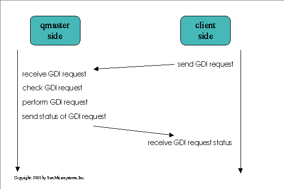

General client implementation

All Grid Engine client applications look very similar, because they
are using the GDI interface (see gdi.html)to
send requests to the qmaster daemon. This
is a typical client/server interface, where the qmaster is the server.
Each client can use the function sge_gdi() to send
a request to the qmaster. The qmaster will check a received request
for its correctness and will perfom the specified actions. The client will
receive a status notification after processing the client request through
the qmaster.
The GDI interface is designed to exchange data lists between the clients
and the qmaster. All Grid Engine lists are so called cull
lists . You can interpret such a list as an object,
such as for instance the job list, which defines a submitted job. All job
related data is stored in this list. Other examples are the queue list
for queue objects or for cluster configurations the cluster configuration
list. All Grid Engine relevant data is stored in cull
lists and all data is managed by the qmaster.
The GDI interface can handle four main operations:
-
SGE_GDI_GET - Get a object list from the qmaster
-
SGE_GDI_ADD - Add a new object list ( e.g. new job(list), new
queue(list) )
-
SGE_GDI_DEL - Delete an object at the qmaster
-
SGE_GDI_MOD - Modify an object at the qmaster
For further details on the GDI please refer to (see
gdi.html
) and The GDI section (section 3) in the Grid Engine reference manual.
The qmaster handles the client requests through the GDI interface in
the qmaster function sge_c_gdi() which is implemented in the file gridengine/source/daemons/qmaster/sge_c_gdi.c.
The client GDI interface is implemented in the gdi lib (file gridengine/source/libs/gdi/sge_gdi_request.c).
The sge_c_gdi() function itself is called from the qmaster when a new
GDI request arrives. The qmaster main loop (while (TRUE) {}) is implemented
in the file /gridengine/source/daemons/qmaster/qmaster.c. Here the master
reacts on so called tags. One tag is e.g. TAG_GDI_REQUEST which indicates
to enter the GDI request function sge_c_gdi().
In order to setup the connection to the qmaster each client will perform
a general client setup. After that,
command line parameters are parsed. Now a client will generate a GDI request
depending on the client and on the options given to the client. The qsub
client, for instance, will generate a new job list and will use the SGE_GDI_ADD
functionallity of the sge_gdi() call to send the new job object to the
qmaster. The qdel client, on the other hand, will use the SGE_GDI_DEL functionallity
to tell the qmaster that a particular job object should get deleted at
the qmaster.
special - clients
qrsh
and qlogin - Grid Engine rsh and login integration
qmake
- Grid Engine parallel make integration
qsh - Grid Engine
sh integration
qtcsh
- Grid Engine tcsh integration
job - related clients
qsub - submit jobs
This client program is used to submit job scripts. Please read the
man page for a functional overview. This client is implemented in the way
described in general client implementation.
Functional summary
The main function of the program can be found in the file gridengine/source/clients/qsub/qsub.c.
It contains the steps:
1. Setup internationalization
2. General client setup
3. Read in all command line options
The qsub command will interpret additional default switches from the
default
files as command arguments. These switches are generally used when
a job is submitted. The default switches are simply added to the ones which
are from the command line. All parameters from the command line are stored
into a cull list of the type SPA_Type.
4. Create a new job list
The function cull_parse_job_parameter() (file: gridengine/source/common/parse_job_cull.c
) creates a job object in accordance with the command line parameters.
5. Send job list to qmaster
Every job is represented by a job list at the qmaster. In order to send
the new generated job to the qmaster the sge_gdi() function (file:
gridengine/source/libs/gdi/sge_gdi_request.c
) is used.
6. Analyze answer from qmaster
qresub - submit a copy of an existing
job
This client program is used to submit a new job with the same parameters
as an already pending or running job. Please read the corresponding man
page for a functional overview. This client is a file link to the qalter
client. The qalter client will react in an different way when its invocation
name is "qresub". This client is implemented in the way described in general
client implementation.
Functional summary
The main function of the progam can be found in in the file gridengine/source/clients/qalter/qalter.c.
It contains the steps:
1. Setup internationalization
2. General client setup
3. Read in all command line options
All parameters from the command line are stored into a cull
list of the type SPA_Type.
4. Create a request list
This list will contain all changes needed by qmaster to submit a job
copy. For qresub this is only the job id of the job which should be copied.
5. Send GDI request to qmaster
The client will now send the request list which includs the job id of the
job (which should be copied) to the qmaster. For this action the GDI interface
operation SGE_GDI_COPY is used when calling the sge_gdi() function
(file: gridengine/source/libs/gdi/sge_gdi_request.c ).
6. Analyze answer from qmaster
qalter - modify submitted jobs
This client program is used to modify already pending or running jobs.
Please read the corresponding man page for a functional overview. This
client is implemented in the way described in general
client implementation.
Functional summary
The main function of the program can be found in the file gridengine/source/clients/qalter/qalter.c.
It contains the following steps:
1. Setup internationalization
2. General client setup
3. Read in all command line options
All parameters from the command line are stored into a cull
list of the type SPA_Type.
4. Create a request list
This list will contain all changes needed by qmaster to manipulate
the existing job.
5. Send GDI request to qmaster
The client will now send the request list which includs the job id of the
job (which should be modified) and all desired modifications to the qmaster.
For this action the GDI interface operation SGE_GDI_MOD is used when calling
the sge_gdi() function (file: gridengine/source/libs/gdi/sge_gdi_request.c
).
6. Analyze answer from qmaster
qdel - delete jobs
This client program is used to delete pending or running jobs. Please read
the corresponding man page for a functional overview. This client is implemented
in the way described in general
client implementation.
Functional summarization
The main function fof the program can be found in the file gridengine/source/clients/qdel/qdel.c.
It contains the following steps:
1. Setup internationalization
2. General client setup
3. Read in all command line options
All parameters from the command line are stored into a cull
list of the type SPA_Type.
4. Generate a job list
The job list contains the job id(s) to be deleted.
5. Send GDI request to qmaster
The client will now send the job list which includs the job id(s) of
the job(s) (which should be deleted) to the qmaster. For this action the
GDI interface operation SGE_GDI_DEL is used when calling the sge_gdi()
function (file: gridengine/source/libs/gdi/sge_gdi_request.c ).
6. Analyze answer from qmaster
qhold - hold back jobs from execution
This client program is used to set pending or running jobs into hold state.
Please read the corresponding man page for a functional overview. This
command is no new client binary. It is only a shell script which is using
the qalter client to modify a job.
qrls - release jobs from previous hold
state
This client program is used to release pending or running jobs from hold
state. Please read the corresponding man page for a functional overview.
This command is no new client binary. It is only a shell script which is
using the qalter client to modify a job.
accounting - related clients
qacct - get accounting information for
completed jobs
This client program is used as reporting and accounting tool. Please read
the corresponding man page for a functional overview. This client is implemented
in the way described in general
client implementation.
Functional summary
The main function of the program can be found in the file gridengine/source/clients/qacct/qacct.c.
It contains the following steps:
1. Setup internationalization
2. General client setup
3. Read in all command line options
All parameters from the command line are stored into a cull
list of the type SPA_Type.
4. Send GDI request(s) to qmaster
The client will retrieve diverse data from the qmaster. For this action
the GDI interface operation SGE_GDI_GET is used when calling the sge_gdi()
function (file: gridengine/source/libs/gdi/sge_gdi_request.c ).
5. Analyze answer from qmaster and display accounting information.
6. Repeat the last two steps for different data calls.
queue - related clients
qconf - add, remove, modify or show Grid
Engine configurations
This client program is the main command-line administrative interface for
Grid Engine. Please read the corresponding man page for a functional overview.
This client is implemented in the way described in general
client implementation.
Functional summary
The main function of the program can be found in the file gridengine/source/clients/qconf/qconf.c.
It contains the following steps:
1. Setup internationalization
2. General client setup
3. Read in all command line options
All parameters from the command line are stored into a cull
list of the type SPA_Type.
4. If neccessary get configuration lists from qmaster
Get e.g. queue configuration list ( with SGE_GDI_GET call )
5. If neccessary Manipulate the lists
Change list attributes
6. Send manipulated list back to qmaster ( with e.g. SGE_GDI_MOD call )
The client will send one or more requests to the qmaster. To perform this,
diverse GDI interface operations are used when calling the sge_gdi()
function (file: gridengine/source/libs/gdi/sge_gdi_request.c ).
7. Alternatively to the 3 steps above new objects can be created or existing
objects can be deleted
8. Analyze answer from qmaster
qmod - modify queue status
This client program is used to modify the status of existing queues. Please
read the corresponding man page for a functional overview. This client
is implemented in the way described in general
client implementation.
Functional summary
The main function of the program can be found in the file gridengine/source/clients/qmod/qmod.c.
It contains the steps:
1. Setup internationalization
2. General client setup
3. Read in all command line options
All parameters from the command line are stored into a cull
list of the type SPA_Type.
4. Generate SGE_QUEUE_LIST
5. Send GDI request to qmaster
The client will send the request list to the qmaster. For this action the
GDI interface operation SGE_GDI_TRIGGER is used when calling the gdi_qmod()
function (file: gridengine/source/libs/gdi/gdi_qmod.c ).
6. Analyze answer from qmaster
general - related clients
qhost - get information about hosts,
queues or jobs
This client program is used to get information about the Grid Engine Cluster.
Please read the corresponding man page for a functional overview. This
client is implemented in the way described in general
client implementation.
Functional summary
The main function of the program can be found in the file gridengine/source/clients/qhost/qhost.c.
It contains the steps:
1. Setup internationalization
2. General client setup
3. Read in all command line options
All parameters from the command line are stored into a cull
list of the type SPA_Type.
4. Send GDI request(s) to qmaster
The client will retrieve diverse data from the qmaster. For this action
the GDI interface operation SGE_GDI_GET is used when calling the sge_gdi()
function (file: gridengine/source/libs/gdi/sge_gdi_request.c ).
5. Analyze answer from qmaster and display results
qselect - get queue names which match
given request
This client program is used to get queue names which match search patterns.
Please read the man corresponding page for a functional overview. This
client is a file link to the qstat client. The qstat
client will react in an different way when its program name is "qselect".
This client is implemented in the way described in general
client implementation.
qstat - show status of jobs and queues
This client program is used get information about jobs and/or queues. Please
read the corresponding man page for a functional overview. This client
is implemented in the way described in general
client implementation.
Functional summary
The main function of the program can be found in the file gridengine/source/clients/qstat/qstat.c.
It contains the steps:
1. Setup internationalization
2. General client setup
3. Read in all command line options
All parameters from the command line are stored into a cull
list of the type SPA_Type.
4. Send GDI request(s) to qmaster
The client will retrieve diverse data from the qmaster. For this action
the GDI interface operation SGE_GDI_GET is used when calling the sge_gdi()
function (file: gridengine/source/libs/gdi/sge_gdi_request.c ).
5. Analyze answer from qmaster and display results.
general client setup
The following function calls are made in each client before starting
any other action. Please do not mix up the call order.
sge_setup()
set program name and path variables
check for sanity
prepare_enroll()
-
initialize security module
-
setup communication library parameters
install_exit_func()
set function pointer to an exit function
lInit()
initialze list library (cull) name space
setup_sig_handlers()
setup signal masks and handler functions
default files
Default files are read and processed during job submission before any submit
option embedded in the job script and before any option in the qsub or
qsh command line are considered. This means the options written into this
file are automatically added to the command line on each qsub call. Please
read the manual page "sge_request" for more information.
cull list
All Grid Engine internal data (jobs, queues, hosts, etc.) are stored in
so called cull (Common Usable List
Library) list.
The cull defines different list and data types. Each list entry can
be accessed by name or position. Also sublists are allowed. Here are some
defined list specifiers:
-
SGE_JOB_LIST - job list
-
SGE_QUEUE_LIST - queue list
-
SGE_CKPT_LIST - checkpointing object list
-
....
Setup internationalization
In order to have the possibility to internationalize the Grid Engine messages,
one of the first things to do at startup of a client application is to
setup the internationalization function. The function install_language_func()
is used to set up a message wrapper. If the Grid Engine system is linked
with the gettext library, this function if called with the original (english)
message, will return the localized message from a message catalouge. The
_() macro is set to this function. Every message put into this macro (between
the brackets) can be localized. All localized messages are defined as a
macro in the msg_x.h files.
Copyright 2001 Sun Microsystems, Inc. All rights reserved.